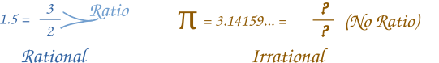

Irrational Numbers
Imagine we want to know the exact diagonal of this square tile. No matter how hard we try, we won't get it as a neat fraction! Because it's an irrational number.
An Irrational Number is a real number that cannot be written as a simple fraction:

1.5 is rational, but π is irrational
Irrational means not Rational (no ratio)
Let's look at what makes a number rational or irrational ...
Rational Numbers
A Rational Number can be written as a Ratio of two integers (ie a simple fraction).
Example: 1.5 is rational, because it can be written as the ratio 3/2
Example: 7 is rational, because it can be written as the ratio 7/1
Example 0.333... (3 repeating) is also rational, because it can be written as the ratio (fraction) 13
Irrational Numbers
But some numbers cannot be written as a ratio of two integers ...
...they are called Irrational Numbers.
Example: π (Pi) is a famous irrational number.
π = 3.1415926535897932384626433832795... (and more)
We cannot write down a simple fraction that equals Pi.
The popular approximation of 227 = 3.1428571428571... is close but not accurate.
Decimals
Rational numbers have a decimal that ends or eventually settles into a repeating pattern (like 0.111…, 0.1666… or 0.037037…).
Irrational numbers have decimals that go on forever without settling into a repeating pattern.
Cannot Be Written as a Fraction
It is irrational because it cannot be written as a ratio (or fraction),
not because it is crazy!
So we can tell if it is Rational or Irrational by trying to write the number as a simple fraction.
Example: 9.5 can be written as a simple fraction like this:
9.5 = 192
So it is a rational number (and so is not irrational)
Here are some more examples:
| Number | As a Fraction | Rational or Irrational? |
|---|---|---|
| 1.75 | 74 | Rational |
| .001 | 11000 | Rational |
| √2 (square root of 2) |
? | Irrational! |
Square Root of 2
Let's look at the square root of 2 more closely.
| When we draw a square of size "1", what is the distance across the diagonal? |
The answer is the square root of 2, which is 1.4142135623730950...(and so on)
But it is not a number like 3, or five-thirds, or anything like that ...
... in fact we cannot write the square root of 2 using a ratio of two numbers ...
... (you can learn why on the Is It Irrational? page) ...
... and so we know it is an irrational number.
Famous Irrational Numbers
Pi is a famous irrational number. People have calculated Pi to over a quadrillion decimal places and still there is no pattern. The first few digits look like this:
3.1415926535897932384626433832795 (and more ...)
The number e (Euler's Number) is another famous irrational number. People have also calculated e to lots of decimal places without any pattern showing. The first few digits look like this:
2.7182818284590452353602874713527 (and more ...)
The Golden Ratio is an irrational number. The first few digits look like this:
1.61803398874989484820... (and more ...)
Many square roots, cube roots, and so on are also irrational numbers. Examples:
- √3 = 1.7320508075688772935274463415059... (and so on)
- √99 = 9.9498743710661995473447982100121... (and so on)
But √4 = 2 is rational, and √9 = 3 is rational ...
... so not all roots are irrational.
Note on Multiplying Irrational Numbers
Multiplying irrational numbers can be surprising!
Have a look at this:
- π × π = π2 is known to be irrational
- But √2 × √2 = 2 is rational
So multiplying irrational numbers might result in a rational number.
Fun Facts ....
Apparently Hippasus (one of Pythagoras' students) discovered irrational numbers when trying to write the square root of 2 as a fraction (using geometry, it is thought). Instead he proved the square root of 2 could not be written as a fraction, so it is irrational.
But followers of Pythagoras could not accept the existence of irrational numbers, and it is said that Hippasus was drowned at sea as a punishment from the gods!